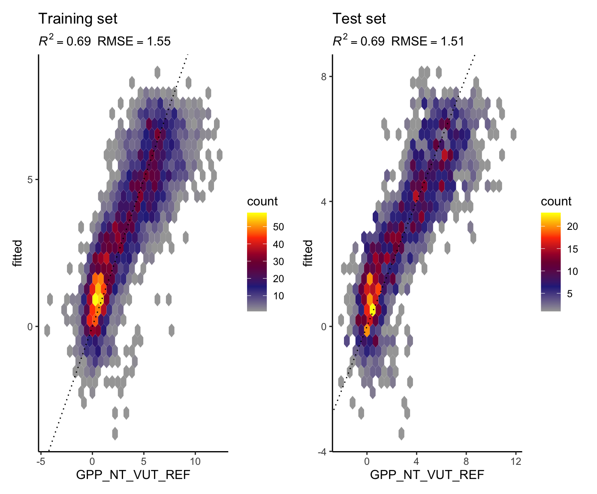
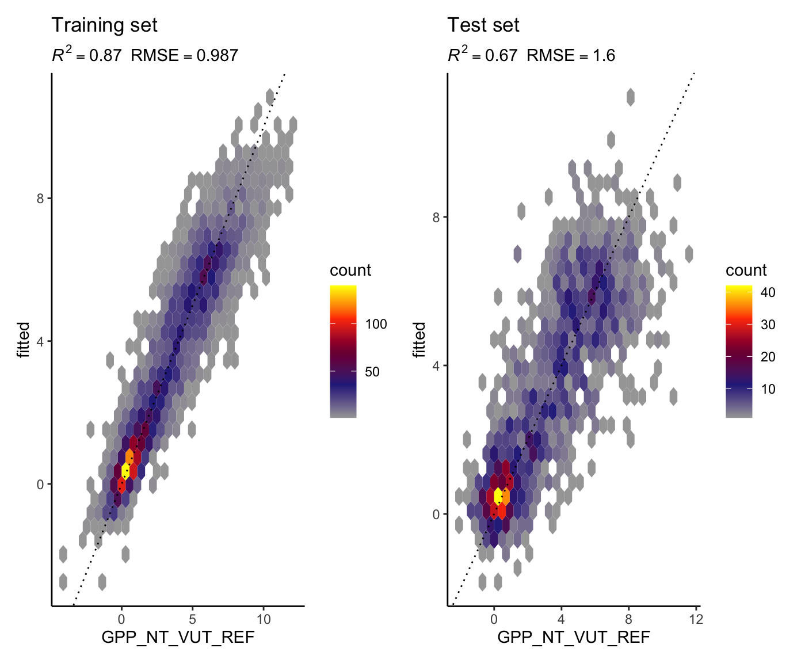
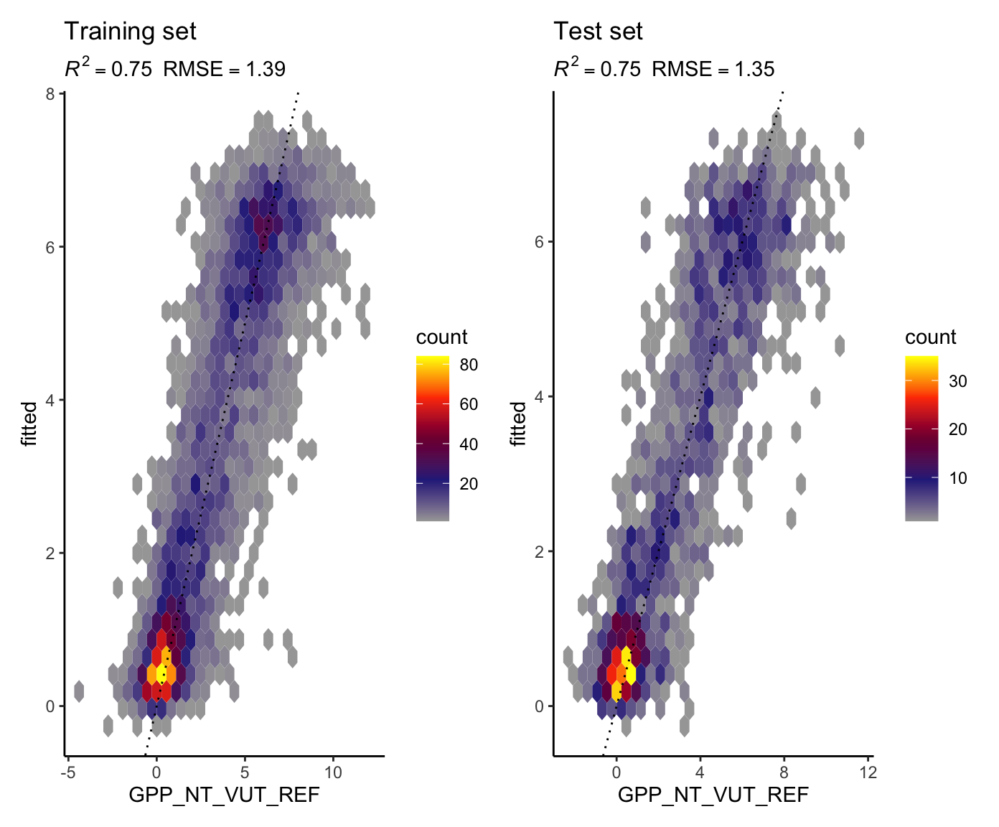
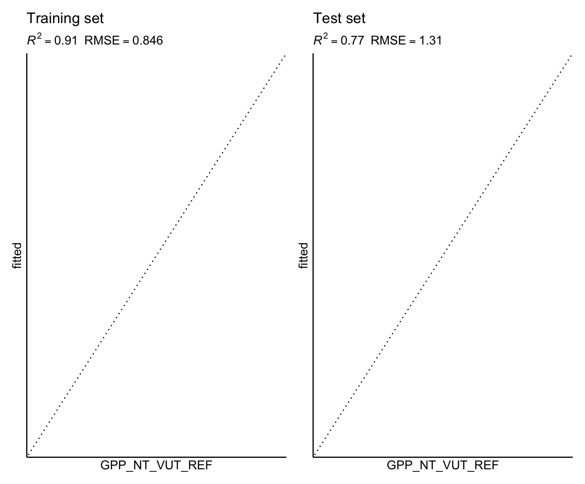
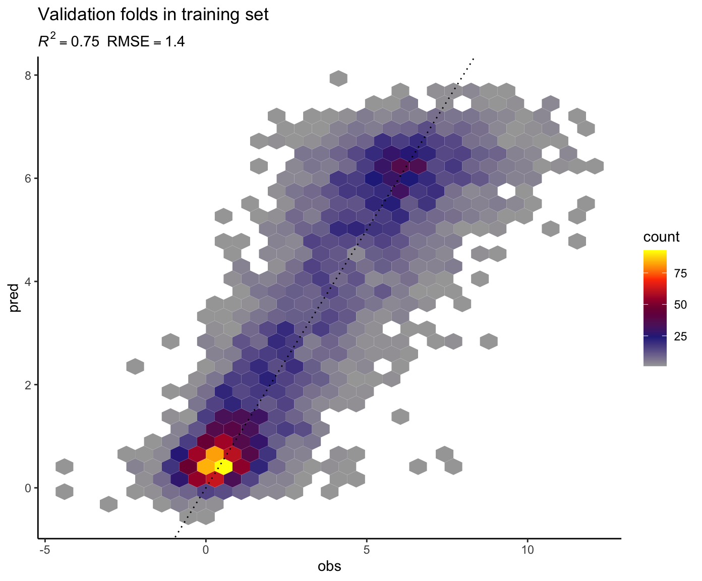

Chapter 8 Solutions
Now that you are familiar with the basic steps for supervised machine learning, you can get your hands on the data yourself and implement code for addressing the modelling task outlined in Chapter ??.
8.1 Reading and cleaning
Read the CSV file "./data/FLX_CH-Dav_FLUXNET2015_FULLSET_DD_1997-2014_1-3.csv", select all variables with name ending with "_F", the variables "TIMESTAMP", "GPP_NT_VUT_REF", and "NEE_VUT_REF_QC", and drop all variables that contain "JSB" in their name. Then convert the variable "TIMESTAMP" to a date-time object with the function ymd() from the lubridate package, and interpret all values -9999 as missing values. Then, set all values of "GPP_NT_VUT_REF" to missing if the corresponding quality control variable indicates that less than 90% are measured data points. Finally, drop the variable "NEE_VUT_REF_QC" - we won’t use it anymore.
library(tidyverse)
ddf <- read_csv("./data/FLX_CH-Dav_FLUXNET2015_FULLSET_DD_1997-2014_1-3.csv") %>%
## select only the variables we are interested in
select(starts_with("TIMESTAMP"),
ends_with("_F"), # all meteorological variables
GPP_NT_VUT_REF,
NEE_VUT_REF_QC,
-contains("JSB")) %>%
## convert to a nice date object
mutate(TIMESTAMP = lubridate::ymd(TIMESTAMP)) %>%
## set all -9999 to NA
na_if(-9999) %>%
## drop QC variables (no longer needed), except NEE_VUT_REF_QC
select(-ends_with("_QC"), NEE_VUT_REF_QC) %>%
mutate(GPP_NT_VUT_REF = ifelse(NEE_VUT_REF_QC < 0.9, NA, GPP_NT_VUT_REF)) %>%
select(-NEE_VUT_REF_QC)8.2 Data splitting
Split the data a training and testing set, that contain 70% and 30% of the total available data, respectively.
library(rsample)
set.seed(1982) # for reproducibility
split <- initial_split(ddf, prop = 0.7)
ddf_train <- training(split)
ddf_test <- testing(split)8.3 Linear model
8.3.1 Training
Fit a linear regression model using the base-R function lm() and the training set. The target variable is "GPP_NT_VUT_REF", and predictor variables are all available meterological variables in the dataset. Answer the following questions:
- What is the \(R^2\) of predicted vs. observed
"GPP_NT_VUT_REF"? - Is the linear regression slope significantly different from zero for all predictors?
- Is a linear regression model with “poor” predictors removed better supported by the data than a model including all predictors?
## fit linear regression model
linmod_baser <- lm(
form = GPP_NT_VUT_REF ~ .,
data = ddf_train %>%
drop_na() %>%
select(-TIMESTAMP)
)
## show summary information of the model
summary(linmod_baser)##
## Call:
## lm(formula = GPP_NT_VUT_REF ~ ., data = ddf_train %>% drop_na() %>%
## select(-TIMESTAMP))
##
## Residuals:
## Min 1Q Median 3Q Max
## -5.1941 -1.0393 -0.1299 0.8859 7.7205
##
## Coefficients:
## Estimate Std. Error t value Pr(>|t|)
## (Intercept) -0.9570704 3.4840107 -0.275 0.783558
## TA_F 0.1633211 0.0108181 15.097 < 2e-16 ***
## SW_IN_F 0.0137226 0.0003914 35.064 < 2e-16 ***
## LW_IN_F 0.0207311 0.0012040 17.219 < 2e-16 ***
## VPD_F -0.1420886 0.0195509 -7.268 4.35e-13 ***
## PA_F -0.0402727 0.0404675 -0.995 0.319704
## P_F -0.0214314 0.0046177 -4.641 3.57e-06 ***
## WS_F -0.1418356 0.0398616 -3.558 0.000378 ***
## ---
## Signif. codes: 0 '***' 0.001 '**' 0.01 '*' 0.05 '.' 0.1 ' ' 1
##
## Residual standard error: 1.549 on 4135 degrees of freedom
## Multiple R-squared: 0.6904, Adjusted R-squared: 0.6899
## F-statistic: 1317 on 7 and 4135 DF, p-value: < 2.2e-16## Models can be compared, for example by the Bayesian Information Criterion (BIC).
## It penalizes complex models and is optimal (lowest) where the trade-off between
## explanatory power on the training set vs. number of predictors is best. The BIC
## tends to be more conservative than the AIC.
BIC(linmod_baser)## [1] 15450.89The variable PA_F was not significant in the linear model. Therefore, we won’t use it for the models below.
## Fit an lm model on the same data, but with PA_F removed.
linmod_baser_nopaf <- lm(
form = GPP_NT_VUT_REF ~ .,
data = ddf_train %>%
drop_na() %>%
select(-TIMESTAMP, -PA_F)
)
## The R-squared is slightly lower here (0.6903) than in the model with all predictors (0.6904)
summary(linmod_baser_nopaf)##
## Call:
## lm(formula = GPP_NT_VUT_REF ~ ., data = ddf_train %>% drop_na() %>%
## select(-TIMESTAMP, -PA_F))
##
## Residuals:
## Min 1Q Median 3Q Max
## -5.1849 -1.0390 -0.1306 0.8867 7.7594
##
## Coefficients:
## Estimate Std. Error t value Pr(>|t|)
## (Intercept) -4.4102425 0.3135013 -14.068 < 2e-16 ***
## TA_F 0.1595814 0.0101445 15.731 < 2e-16 ***
## SW_IN_F 0.0136923 0.0003902 35.093 < 2e-16 ***
## LW_IN_F 0.0210424 0.0011626 18.099 < 2e-16 ***
## VPD_F -0.1400240 0.0194405 -7.203 6.98e-13 ***
## P_F -0.0212661 0.0046147 -4.608 4.18e-06 ***
## WS_F -0.1343263 0.0391409 -3.432 0.000605 ***
## ---
## Signif. codes: 0 '***' 0.001 '**' 0.01 '*' 0.05 '.' 0.1 ' ' 1
##
## Residual standard error: 1.549 on 4136 degrees of freedom
## Multiple R-squared: 0.6903, Adjusted R-squared: 0.6899
## F-statistic: 1537 on 6 and 4136 DF, p-value: < 2.2e-16## ... but the BIC is clearly lower, indicating that the model with PA_F removed is better.
BIC(linmod_baser_nopaf)## [1] 15443.55Use caret and the function train() for fitting the same linear regression model (with all predictors) on the same data. Does it yield identical results as using lm() directly? You will have to set the argument trControl accordingly to avoid resampling, and instead fit the model on the all data in ddf_train. You can use summary() also on the object returned by the function train().
library(caret)
linmod_caret <- train(
form = GPP_NT_VUT_REF ~ .,
data = ddf_train %>%
drop_na() %>%
select(-TIMESTAMP),
method = "lm",
trControl = trainControl(method = "none")
)
summary(linmod_caret)##
## Call:
## lm(formula = .outcome ~ ., data = dat)
##
## Residuals:
## Min 1Q Median 3Q Max
## -5.1941 -1.0393 -0.1299 0.8859 7.7205
##
## Coefficients:
## Estimate Std. Error t value Pr(>|t|)
## (Intercept) -0.9570704 3.4840107 -0.275 0.783558
## TA_F 0.1633211 0.0108181 15.097 < 2e-16 ***
## SW_IN_F 0.0137226 0.0003914 35.064 < 2e-16 ***
## LW_IN_F 0.0207311 0.0012040 17.219 < 2e-16 ***
## VPD_F -0.1420886 0.0195509 -7.268 4.35e-13 ***
## PA_F -0.0402727 0.0404675 -0.995 0.319704
## P_F -0.0214314 0.0046177 -4.641 3.57e-06 ***
## WS_F -0.1418356 0.0398616 -3.558 0.000378 ***
## ---
## Signif. codes: 0 '***' 0.001 '**' 0.01 '*' 0.05 '.' 0.1 ' ' 1
##
## Residual standard error: 1.549 on 4135 degrees of freedom
## Multiple R-squared: 0.6904, Adjusted R-squared: 0.6899
## F-statistic: 1317 on 7 and 4135 DF, p-value: < 2.2e-168.3.2 Prediction
With the model containing all predictors and fitted on ddf_train, make predictions using first ddf_train and then ddf_test. Compute the \(R^2\) and the root-mean-square error, and visualise modelled vs. observed values to evaluate both predictions.
Do you expect the linear regression model trained on ddf_train to predict substantially better on ddf_train than on ddf_test? Why (not)?
Hints:
- To calculate predictions, use the generic function
predict()with the argumentnewdata = .... - The \(R^2\) can be extracted from the model object as
summary(model_object)$r.squared, or is (as the RMSE) given in the metrics data frame returned bymetrics()from the yardstick library. - For visualisation the model performance, consider a scatterplot, or (better) a plot that reveals the density of overlapping points. (We’re plotting information from over 4000 data points here!)
library(patchwork)
library(yardstick)
## made into a function to reuse code below
eval_model <- function(mod, df_train, df_test){
## add predictions to the data frames
df_train <- df_train %>%
drop_na() %>%
mutate(fitted = predict(mod, newdata = .))
df_test <- df_test %>%
drop_na() %>%
mutate(fitted = predict(mod, newdata = .))
## get metrics tables
metrics_train <- df_train %>%
yardstick::metrics(GPP_NT_VUT_REF, fitted)
metrics_test <- df_test %>%
yardstick::metrics(GPP_NT_VUT_REF, fitted)
## extract values from metrics tables
rmse_train <- metrics_train %>%
filter(.metric == "rmse") %>%
pull(.estimate)
rsq_train <- metrics_train %>%
filter(.metric == "rsq") %>%
pull(.estimate)
rmse_test <- metrics_test %>%
filter(.metric == "rmse") %>%
pull(.estimate)
rsq_test <- metrics_test %>%
filter(.metric == "rsq") %>%
pull(.estimate)
## visualise with a hexagon binning and a customised color scale,
## adding information of metrics as sub-titles
gg1 <- df_train %>%
ggplot(aes(GPP_NT_VUT_REF, fitted)) +
geom_hex() +
scale_fill_gradientn(
colours = colorRampPalette( c("gray65", "navy", "red", "yellow"))(5)) +
geom_abline(slope = 1, intercept = 0, linetype = "dotted") +
labs(subtitle = bquote( italic(R)^2 == .(format(rsq_train, digits = 2)) ~~
RMSE == .(format(rmse_train, digits = 3))),
title = "Training set") +
theme_classic()
gg2 <- df_test %>%
ggplot(aes(GPP_NT_VUT_REF, fitted)) +
geom_hex() +
scale_fill_gradientn(
colours = colorRampPalette( c("gray65", "navy", "red", "yellow"))(5)) +
geom_abline(slope = 1, intercept = 0, linetype = "dotted") +
labs(subtitle = bquote( italic(R)^2 == .(format(rsq_test, digits = 2)) ~~
RMSE == .(format(rmse_test, digits = 3))),
title = "Test set") +
theme_classic()
return(gg1 + gg2)
}
eval_model(mod = linmod_baser, df_train = ddf_train, df_test = ddf_test)
Here, the function eval_model() returned an object that is made up of two plots (return(gg1 + gg2) in the function definition). This combination of plots by + is enabled by the patchwork library. The individual plot objects (gg1 and gg2) are returned by the ggplot() functions. The visualisation here is density plot of hexagonal bins. It shows the number of points inside each bin, encoded by the color (see legend “count”). We want the highest density of points along the 1:1 line (the dotted line). Predictions match observations perfectly for points lying on the 1:1 line. Alternatively, we could also use a scatterplot to visualise the model evaluation. However, a large number of points would overlie each other. As typical machine learning applications make use of large number of data, such evaluation plots would typically face the problem of overlying points and density plots are a solution.
Metrics are given in the subtitle of the plots. Note that the \(R^2\) and the RMSE measure different aspects of model-data agreement. Here, the measure the correlation (fraction of variation explained), and the average error. We should generally consider multiple metrics measuring multiple aspects of the prediction-observation fit to evaluate models.
8.4 KNN
8.4.1 Check data
ddf_train %>%
mutate(split = "train") %>%
bind_rows(ddf_test %>%
mutate(split = "test")) %>%
pivot_longer(cols = 2:9, names_to = "variable", values_to = "value") %>%
ggplot(aes(x = value, y = ..density.., color = split)) +
geom_density() +
facet_wrap(~variable, scales = "free")
8.4.2 Training
Fit two KNN models on ddf_train (excluding "PA_F"), one with \(k = 2\) and one with \(k = 30\), both without resampling. Use the RMSE as the loss function. Center and scale data as part of the pre-processing and model formulation specification using the function recipe().
library(recipes)
## model formulation and preprocessing specification
myrecipe <- recipe(
GPP_NT_VUT_REF ~ TA_F + SW_IN_F + LW_IN_F + VPD_F + P_F + WS_F,
data = ddf_train %>% drop_na()) %>%
step_center(all_numeric(), -all_outcomes()) %>%
step_scale(all_numeric(), -all_outcomes())
## fit model with k=2
mod_knn_k2 <- train(
myrecipe,
data = ddf_train %>%
drop_na(),
method = "knn",
trControl = trainControl("none"),
tuneGrid = data.frame(k = c(2)),
metric = "RMSE"
)
## fit model with k=30
mod_knn_k30 <- train(
myrecipe,
data = ddf_train %>%
drop_na(),
method = "knn",
trControl = trainControl("none"),
tuneGrid = data.frame(k = c(30)),
metric = "RMSE"
)8.4.3 Prediction
With the two models fitted above, predict "GPP_NT_VUT_REF" for both and training and the testing sets, and evaluate them as above (metrics and visualisation).
Which model do you expect to perform better better on the training set and which to perform better on the testing set? Why?
## with k = 2
eval_model(
mod_knn_k2,
df_train = ddf_train,
df_test = ddf_test
)
## with k = 30
eval_model(
mod_knn_k30,
df_train = ddf_train,
df_test = ddf_test
)
8.4.4 Sample hyperparameters
Train a KNN model with hyperparameter (\(k\)) tuned, and with five-fold cross validation, using the training set. As the loss function, use RMSE. Sample the following values for \(k\): 2, 5, 10, 15, 18, 20, 22, 24, 26, 30, 35, 40, 60, 100. Visualise the RMSE as a function of \(k\).
Hint:
- The visualisation of cross-validation results can be visualised with the
plot(model_object)ofggplot(model_object).
mod_knn <- train(
myrecipe,
data = ddf_train %>%
drop_na(),
method = "knn",
trControl = trainControl(method = "cv", number = 5),
tuneGrid = data.frame(k = c(2, 5, 10, 15, 20, 25, 30, 35, 40, 60, 100, 200, 300)),
metric = "RMSE"
)
ggplot(mod_knn)
8.5 Random forest
8.5.1 Training
Fit a random forest model with ddf_train and all predictors excluding "PA_F" and five-fold cross validation. Use RMSE as the loss function.
Hints:
- Use the package ranger which implements the random forest algorithm.
- See here for information about hyperparameters available for tuning with caret.
- Set the argument
savePredictions = "final"of functiontrainControl().
library(ranger)
## no pre-processing necessary
myrecipe <- recipe(
GPP_NT_VUT_REF ~ TA_F + SW_IN_F + LW_IN_F + VPD_F + P_F + WS_F,
data = ddf_train %>%
drop_na())
rf <- train(
myrecipe,
data = ddf_train %>%
drop_na(),
method = "ranger",
trControl = trainControl(method = "cv", number = 5, savePredictions = "final"),
tuneGrid = expand.grid( .mtry = floor(6 / 3),
.min.node.size = 5,
.splitrule = "variance"),
metric = "RMSE",
replace = FALSE,
sample.fraction = 0.5,
num.trees = 2000, # high number ok since no hperparam tuning
seed = 1982 # for reproducibility
)
rf## Random Forest
##
## 4143 samples
## 8 predictor
##
## Recipe steps:
## Resampling: Cross-Validated (5 fold)
## Summary of sample sizes: 3315, 3315, 3315, 3315, 3312
## Resampling results:
##
## RMSE Rsquared MAE
## 1.396752 0.7485248 1.055638
##
## Tuning parameter 'mtry' was held constant at a value of 2
## Tuning
## parameter 'splitrule' was held constant at a value of variance
##
## Tuning parameter 'min.node.size' was held constant at a value of 58.5.2 Prediction
Evaluate the trained model on the training and on the test set, giving metrics and a visualisation as above.
How are differences in performance to be interpreted? Compare the performances of linear regression, KNN, and random forest, considering the evaluation on the test set.
eval_model(rf, df_train = ddf_train, df_test = ddf_test)
Show the model performance (metrics and visualisation) on the validation sets all cross validation folds combined.
Do you expect it to be more similar to the model performance on the training set or the testing set in the evaluation above? Why?
metrics_train <- rf$pred %>%
yardstick::metrics(obs, pred)
rmse_train <- metrics_train %>%
filter(.metric == "rmse") %>%
pull(.estimate)
rsq_train <- metrics_train %>%
filter(.metric == "rsq") %>%
pull(.estimate)
rf$pred %>%
ggplot(aes(obs, pred)) +
geom_hex() +
scale_fill_gradientn(
colours = colorRampPalette( c("gray65", "navy", "red", "yellow"))(5)) +
geom_abline(slope = 1, intercept = 0, linetype = "dotted") +
labs(subtitle = bquote( italic(R)^2 == .(format(rsq_train, digits = 2)) ~~
RMSE == .(format(rmse_train, digits = 3))),
title = "Validation folds in training set") +
theme_classic()